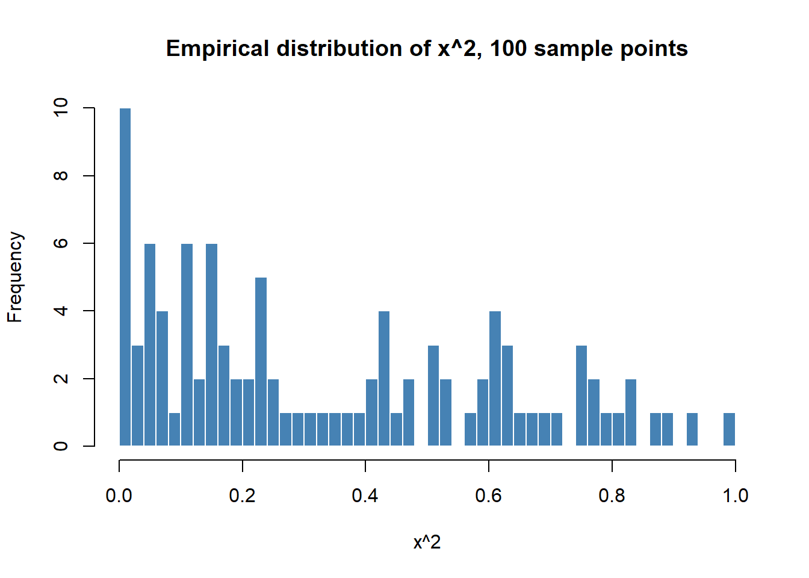

Intuition
Subhankar Ghosh
June 16, 2018
Monte Carlo Approximation
If you have a random variable X with a known distribution (for example Uniform Distribution or Normal Distribution), but now you are solving a problem which requires knowing about the distribution of a function of the random variable X \(f(X)\). What are the paths you can travel to solve it?
Remember your Statistics class from your university, one of the topics must have been change of variables, rings a bell? Yes the professor gave you a few steps involving some differentiation, substitution that you implemented to come up with the correct answer.
What if I tell you there is a simpler way to approximate the distribution of the function of a random variable. The Monte Carlo Approximation. Yayy excited? Why not this is something new and people use it all the time.
Let us look at it in a more formal way.
If we want to find \(E[f(X)]\) where \(X \sim P\) where P is a know probability distribution.
Then we sample \(S\) iid random variables \(X_1, X_2, ..., X_S \sim P\). Let our Monte Carlo estimator of \(E[f(X)]\) be \(\hat{\mu}.\) \[\hat{\mu} = \frac{\sum_{i=1}^S f(X_i)}{S} \approx E[f(X)]\]
Example
Simple one. \(X \sim Unif(0, 1)\) find \(E[Y]\) where \(y = x^2\)

print(paste0("Mean with 100 samples ", mean(runif(100)^2)))## [1] "Mean with 100 samples 0.304314449894507"print(paste0("Mean with 500 samples ", mean(runif(500)^2)))## [1] "Mean with 500 samples 0.340007418878817"print(paste0("Mean with 1500 samples ", mean(runif(1500)^2)))## [1] "Mean with 1500 samples 0.350352548064769"We sampled 100, 500 and 1500 iid points from \(Unif(0, 1)\) and plotted their \(f(X) = X^2\) values. As can be seen from the plot they are approximately same as the analytical plot should be.
Also as we increase number of sample points we see the plots being smoother and it converges to the analytical result. From here we can verify a result that Monte Carlo estimator converges in probability to the analytical result/actual distribution parameter at a rate of \(\frac{1}{\sqrt{n}}\).
Monte Carlo approximation is a very simple yet very powerful tool. More on this topic can be read from here and here.
By Subhankar Ghosh